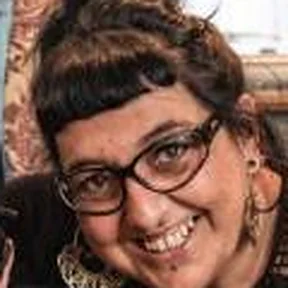
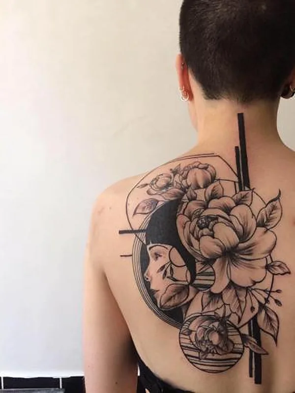
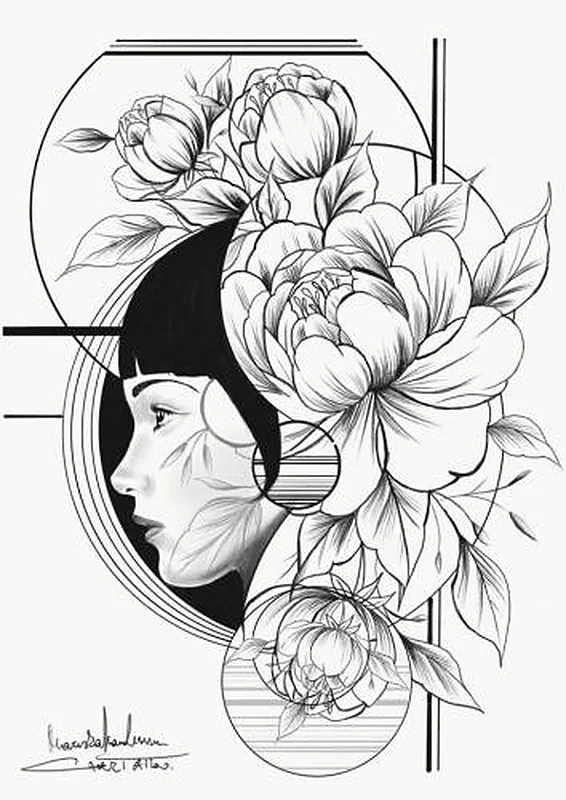
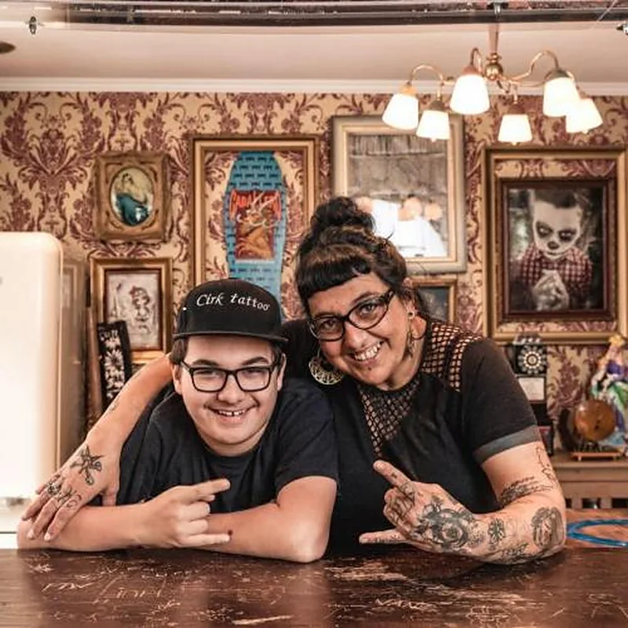
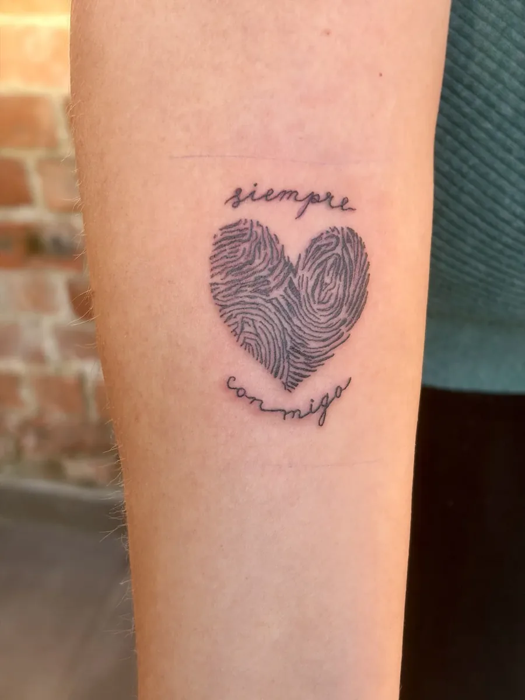
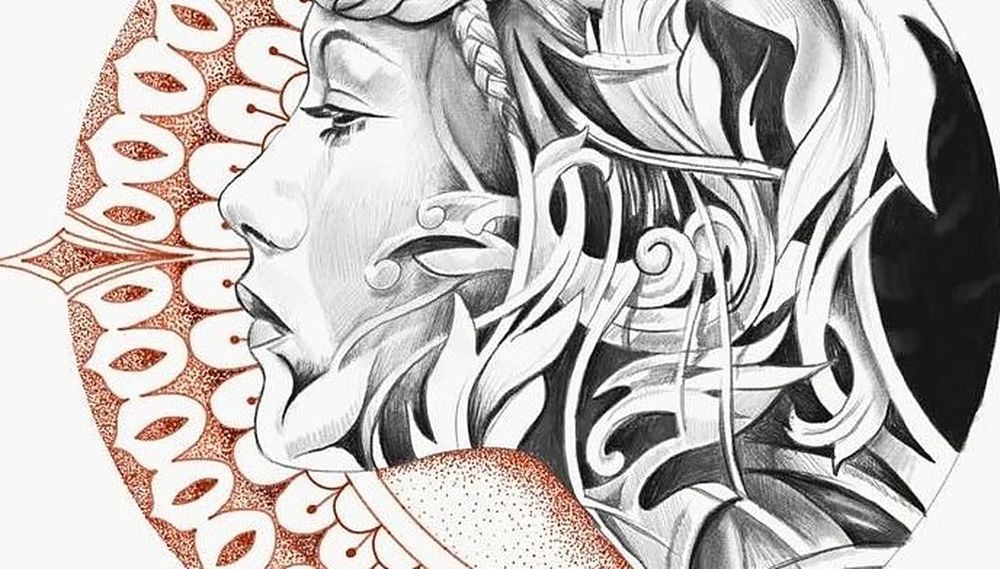
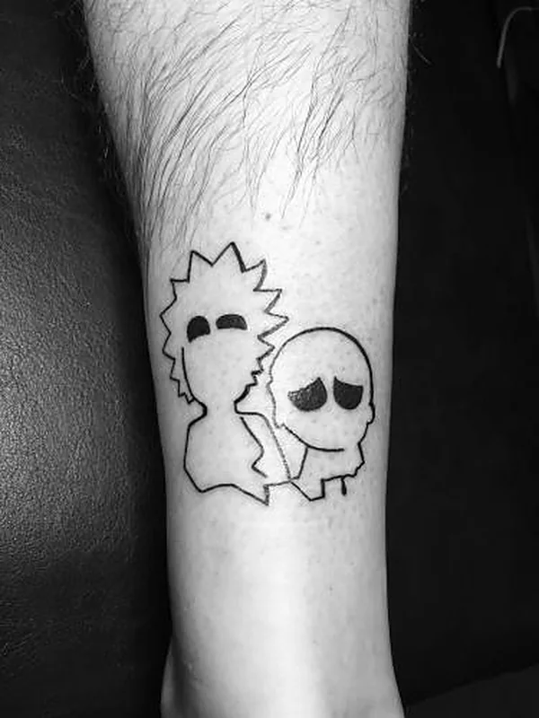

Getekend met een beetje magie.
Ik ben Mariska. Ik groeide op in het circus, en die wereld zit nog altijd in wat ik teken. Van een kleine lijn op je arm tot een stuk over je hele rug: we maken het samen.



38 reviews
- Eigen ontwerpJe tattoo wordt eerst voor jou getekend
- Fijne lijn en blackworkVan dun en sierlijk tot vol en zwart
- Klein of grootEen eerste tattoo of een heel rugstuk
- RolstoeltoegankelijkIedereen kan vlot binnen in de studio

Opgegroeid in het circus.
Iedereen die me kent, weet in wat voor magische wereld ik ben opgegroeid: het circus. Dat heeft me gemaakt tot wie ik vandaag ben.
Ik ben in Aalst geboren en ik woon hier graag, een Oilsjtenes in hert en nieren. Lang heb ik nagedacht over de naam van mijn studio. Het werd Cirk: een stukje circus, en ook een stukje Aalst.
Aalst
Wat ik teken en zet.
Veel begint als tekening op papier. Pas als die klopt, gaat ze op je huid. Een greep uit mijn werk, het meeste recente staat op Instagram.



Klein en speels mag ook.Nog veel meer werk op Instagram, @cirktattoo
Wat ik het liefst deed, werd mijn werk. Dat samenbrengen, dat is de magie.
Mariska
Zo komt je tattoo tot leven.
Geen haast, wel een goed gesprek. Twijfel je nog over de plek of de grootte? Dat is normaal, daar praten we eerst over.
- 1
Stuur je idee
Een foto, een schets of een paar woorden. Zeg er ook bij waar je hem wil en hoe groot ongeveer.
- 2
Ik teken het uit
Ik maak er een ontwerp van, en we passen het aan tot het helemaal van jou is.
- 3
De afspraak
In de studio kijken we eerst samen naar de plek en de grootte. Pas als het goed zit, begin ik.
- 4
Goed genezen
Je gaat naar huis met uitleg over de verzorging. Vragen achteraf? Stuur gerust een berichtje.
Kom eens binnen.
Stuur eerst een berichtje of bel even, dan zoeken we samen een moment dat past.
Je eerste berichtje
Hiermee kan ik je meteen verder helpen:
- 1Een foto of schetsOf een paar woorden over wat je in gedachten hebt
- 2De plek op je lichaamPols, arm, rug, enkel of ergens anders
- 3Ongeveer hoe grootEen ruwe schatting in centimeter is genoeg